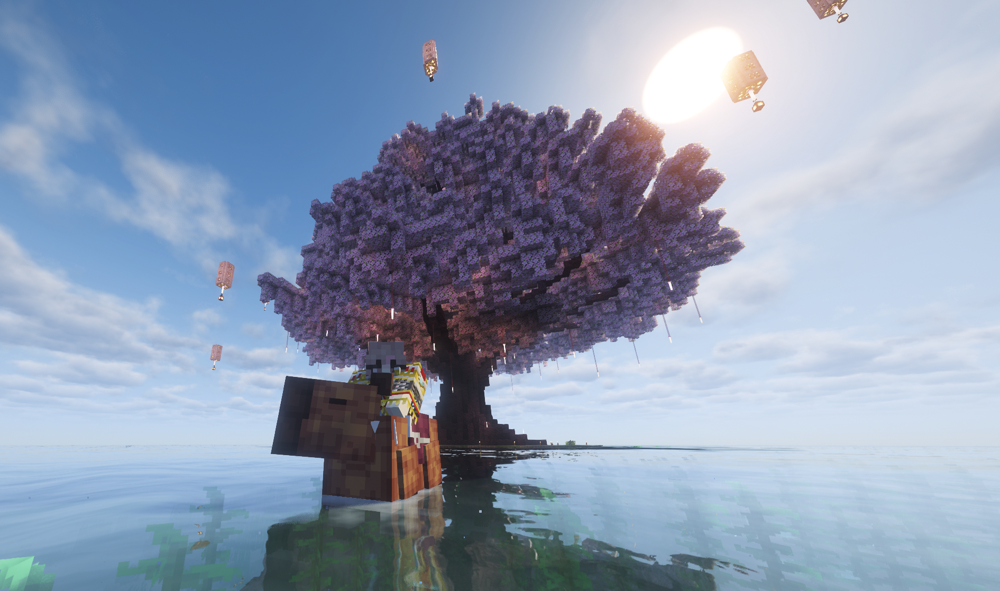

STARFALL TOWN WIKI
你想怎么玩，星落小镇都给你准备好了。
这是一个不需要 Mod 的全内容 Minecraft 服务器：插件与模型带来建筑、生电、枪械载具、搜打撤、RPG、地牢、种植、钓鱼、宠物和考古等多条玩法路线。
无需 Mod插件 + 模型持续更新交流群：872059822

先选你想玩的路线
服务器有什么不同
不是单一玩法服
你可以建房子，也可以拿枪进搜打撤；可以种田养老，也可以组队挑战地牢。
不靠 Mod 堆内容
主要内容由插件与模型完成，客户端更轻，玩法入口更集中。
生电尽量自由
不限制大部分生电玩法，红石、自动化和大型工程都有发挥空间。
内容持续完善
新世界、新装备、新地牢、新任务和新系统会持续加入服务器。
推荐阅读顺序
1
新玩家先看基础玩法
了解主菜单、圈地、王国、星币来源和日常发展路线。
2
想打架就看搜打撤
了解如何组队、配装、搜索物资、启动撤离和处理死亡遗物箱。
3
想探索就去自然之境
看看这个不能圈地、不能建王国，但资源和地牢更多的新世界。
4
再按兴趣查看专题
种植、料理、钓鱼、精英挑战、考古、宠物和配方都可以单独阅读。
服务器交流群
⭐ 星落小镇服务器交流群：872059822